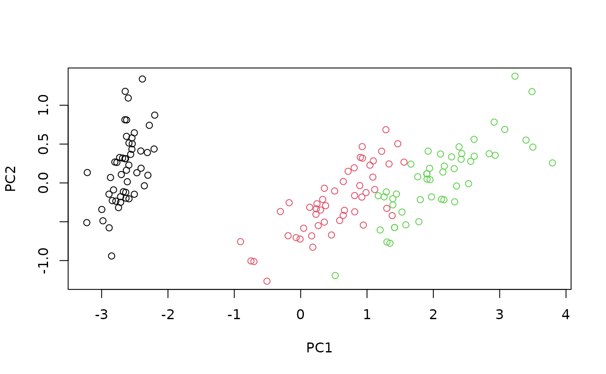

Ordinates samples from their feature abundances, optionally after a
normalization such as the centered log ratio (CLR, giving an "Aitchison
PCA"). Gives the same scores, loadings, and variances as stats::prcomp()
on the normalized table, but computes only the first few axes, straight
from sparse input, which takes far less time and memory for large
datasets.
Usage
pca(
counts,
margin = 1L,
norm = "none",
pseudocount = NULL,
n_axes = 3L,
scale = FALSE,
cpus = n_cpus()
)Arguments
- counts
A numeric matrix of count data (samples \(\times\) features). Typically contains absolute abundances (integer counts), though proportions are also accepted.
- margin
The margin containing samples.
1if samples are rows,2if samples are columns. Ignored whencountsis a special object class (e.g.phyloseq). Default:1- norm
Normalize the incoming counts before the PCA. Options are:
'none': No transformation.'percent': Relative abundance (sample abundances sum to 1).'chord': Each sample scaled to unit length (Euclidean norm 1).'hellinger': Square root of relative abundance (the Hellinger transformation).'binary': Presence/absence (each count is either 0 or 1).'clr': Centered log ratio, giving an Aitchison PCA.'rclr': Robust centered log ratio. Zeros stay 0.
Default:
'none'.- pseudocount
Value added to counts to handle zeros when
norm = 'clr'. Ignored for other normalization methods. See Pseudocount section.- n_axes
The number of axes to compute. Default:
3- scale
Scale each feature to unit variance (after
norm, before the PCA), as inprcomp(scale. = TRUE). This gives every feature equal weight, so that a PCA of the correlation matrix rather than the covariance matrix results. Default:FALSE- cpus
How many parallel processing threads should be used. The default,
n_cpus(), will use all logical CPU cores.
Value
A numeric matrix with one row per sample and one column per axis,
named "PC1", "PC2", etc., as described in "Ordination result"
below. Its attributes are:
method:"pca".eig: The variance of each axis:prcomp()'ssdev^2.prop: The proportion of the total variance that each axis explains,eig / trace.trace: The total variance: the sum of all features' variances (afternormandscale), which is also the sum of all axes'eig.loadings: A matrix with one row per feature and one column per axis: the unit-length principal axes,prcomp()'srotation.
Details
Method
With \(Z\) the normalized table (samples in rows), \(J\) the centering
matrix, and \(D\) the diagonal matrix of the features' standard
deviations (or the identity matrix when scale = FALSE), PCA is the
singular value decomposition \(JZD^{-1} = USV^T\). The scores are
\(US\), the loadings \(V\), and each axis's variance (eig) is
\(s^2 / (n - 1)\), for \(n\) samples.
prcomp() builds the whole centered table and decomposes it in full.
pca() finds only the first n_axes axes, by block Lanczos iteration, which
only needs products of the table with a few vectors at a time. Those are
computed in parallel from the non-zero counts alone: the zeros of each
sample all share one value after normalization (0, or
\(\log(pseudocount)\) minus the sample's mean log for norm = 'clr'),
and centering only subtracts each feature's mean, so a sparse table is
never made dense.
Relation to pcoa()
The scores are the same as those of pcoa() on the Euclidean distances
between the normalized samples: pca(counts) and
pcoa(euclidean(counts)), or pca(counts, norm = 'clr') and
pcoa(aitchison(counts)), give the same coordinates. PCoA's eigenvalues
are \(s^2\), so pca()'s eig is pcoa()'s divided by \(n - 1\);
prop is the same for both. What pca() adds is the loadings: how much
each feature contributes to each axis, e.g. for a biplot.
Robust Aitchison PCA
norm = 'rclr' with pca() is a plain PCA of the rclr-transformed table,
with its zeros left as 0. DEICODE and gemelli's Robust Aitchison PCA
instead treat those zeros as missing values and fill them in by low-rank
matrix completion (OptSpace) before the decomposition, so their results
differ.
Axis signs and reproducibility
A principal axis's sign is arbitrary, so different software can return
mirror images of the same axis. As pcoa() does, pca() flips each axis
so that its largest score in absolute value is positive, and flips its
loadings to match. Results are identical from run to run and for any
number of cpus.
n_axes larger than the number of samples minus one, or the number of
features, is reduced to the smaller of those. Axes with variances at
rounding-error level, below sqrt(.Machine$double.eps) times the first
one, are dropped with a warning. With scale = TRUE, features with
constant values (such as features absent from every sample) are left out,
where prcomp() would stop with an error.
Ordination result
Every ordination function (pcoa(), pca(), rpca(), dbrda(),
capscale(), mds(), nmds(), isomap(), tsne(), umap(), and so
dist_ord()) returns the same kind of
object: a numeric matrix with one row per sample and one column per
axis, so that it can go straight into plot() or a data frame. Rows are
named after the samples, when the input has names. Columns are named
after the method: "PCoA1", "PC1", "RPCA1", "dbRDA1" or "CAP1"
(then "MDS1" for unconstrained axes), "MDS1", "NMDS1",
"Isomap1", "TSNE1", "UMAP1", and so on.
Its attributes always begin with these three, in this order, each with one value per column:
method: The method's ID, e.g."pcoa"or"nmds".eig: Each axis's eigenvalue, on the method's own scale:pcoa()andisomap()give the eigenvalues of Gower's centered matrix (sums of squares);pca()andrpca()give variances, which arepcoa()'s divided by \(n - 1\) for \(n\) samples; anddbrda()andcapscale()followvegan, which also divides by \(n - 1\) when any distance is 4 or more.NAformds(),nmds(),tsne(), andumap(), which have no eigenvalues.prop: The proportion of the total variance (or inertia) that each axis explains. Unlikeeig, it is comparable between methods, so use it to label axes.NAwhere it isn't defined.
Attributes particular to the method follow them. The matrix has class
"ecodive_ord" (as well as "matrix"), only so that print() lists the
other attributes by name rather than in full. Subsetting with [, or
as.data.frame(), gives a plain matrix or data frame without them.
Input Types
The counts parameter is designed to accept a simple numeric matrix, but
seamlessly supports objects from the following biological data packages:
phyloseqrbiomSummarizedExperimentTreeSummarizedExperiment
For large datasets, standard matrix operations may be slow. See
vignette('performance') for details on using optimized formats
(e.g. sparse matrices) and parallel processing.
Pseudocount
The pseudocount parameter is only relevant when norm = 'clr'.
Zeros are undefined in the centered log-ratio (CLR) transformation. If
norm = 'clr', pseudocount is NULL (the default), and
zeros are detected, the function uses half the minimum non-zero value
(min(x[x>0]) / 2) and issues a warning.
To suppress the warning, provide an explicit value (e.g., 1).
Why this matters: The choice of pseudocount is not neutral; it acts as a weighting factor that can significantly distort downstream results, especially for sparse datasets. See Gloor et al. (2017) and Kaul et al. (2017) for open-access discussions on the mathematical implications, or Costea et al. (2014) for the impact on community clustering.
See aitchison for references.
References
Pearson, K. (1901). On lines and planes of closest fit to systems of points in space. The London, Edinburgh, and Dublin Philosophical Magazine and Journal of Science, 2(11), 559-572. doi:10.1080/14786440109462720
Aitchison, J. (1983). Principal component analysis of compositional data. Biometrika, 70(1), 57-65. doi:10.1093/biomet/70.1.57
Examples
ord <- pca(iris[, 1:4])
plot(ord, col = iris$Species)

head(ord)
#> PC1 PC2 PC3
#> [1,] -2.684126 0.3193972 -0.02791483
#> [2,] -2.714142 -0.1770012 -0.21046427
#> [3,] -2.888991 -0.1449494 0.01790026
#> [4,] -2.745343 -0.3182990 0.03155937
#> [5,] -2.728717 0.3267545 0.09007924
#> [6,] -2.280860 0.7413304 0.16867766
str(ord)
#> 'ecodive_ord' num [1:150, 1:3] -2.68 -2.71 -2.89 -2.75 -2.73 ...
#> - attr(*, "dimnames")=List of 2
#> ..$ : NULL
#> ..$ : chr [1:3] "PC1" "PC2" "PC3"
#> - attr(*, "method")= chr "pca"
#> - attr(*, "eig")= num [1:3] 4.2282 0.2427 0.0782
#> - attr(*, "prop")= num [1:3] 0.9246 0.0531 0.0171
#> - attr(*, "trace")= num 4.57
#> - attr(*, "loadings")= num [1:4, 1:3] 0.3614 -0.0845 0.8567 0.3583 0.6566 ...
#> ..- attr(*, "dimnames")=List of 2
#> .. ..$ : chr [1:4] "Sepal.Length" "Sepal.Width" "Petal.Length" "Petal.Width"
#> .. ..$ : chr [1:3] "PC1" "PC2" "PC3"